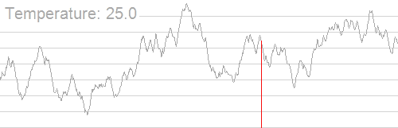

OI Wiki · prijevod · RaznoOI Wiki · translation · Miscellaneous
Simulirano kaljenjeSimulated annealing
Sadržaj
Uvod
Simulirano kaljenje (simulated annealing) randomizirani je algoritam. Kad je broj mogućih rješenja problema golem (ili čak beskonačan), a funkcija nije unimodalna, često ga rješavamo simuliranim kaljenjem.
Objašnjenje
Promatrajući tijek hill climbinga, uočavamo: neoptimalno rješenje u blizini trenutačnog optimuma hill climbing jednostavno odbacuje. A u mnogim slučajevima moramo prihvatiti to neoptimalno rješenje kako bismo iskočili iz lokalnog optimuma – to je upravo algoritam simuliranog kaljenja.
Što je kaljenje? (iz Baidu Baike)
Kaljenje (ovdje točnije: žarenje, engl. annealing) postupak je toplinske obrade metala: metal se polagano zagrijava do određene temperature, drži se na njoj dovoljno dugo i zatim hladi prikladnom brzinom. Cilj je smanjiti tvrdoću i poboljšati obradivost rezanjem; ukloniti zaostala naprezanja, stabilizirati dimenzije te smanjiti sklonost deformacijama i pukotinama; usitniti zrna, prilagoditi strukturu i ukloniti strukturne nedostatke. Točnije rečeno, kaljenje je postupak toplinske obrade materijala, i metalnih i nemetalnih. Osim toga, svrha kaljenja novih materijala djelomično se podudara s tradicionalnim kaljenjem metala, a djelomično se od njega razlikuje.
Budući da zakonitosti kaljenja uvode više slučajnih čimbenika, vjerojatnost da dobijemo optimalno rješenje znatno raste. Stoga možemo simulirati taj proces, uzimajući ciljnu funkciju kao funkciju energije.
Postupak
Jednom rečenicom: ako je rješenje u novom stanju bolje, ažuriramo odgovor, a inače novo stanje prihvaćamo s određenom vjerojatnošću.
Neka je trenutačna temperatura \(T\), a razlika energije (vrijednosti) između novog stanja \(S'\) i poznatog stanja \(S\) (novo se stanje dobiva iz poznatog na slučajan način) neka je \(\Delta E\) (\(\Delta E\geqslant 0\)); tada je vjerojatnost prijelaza stanja (promjene optimalnog rješenja)
Napomena: ponekad, kako bi dobiveno rješenje bilo kvalitetnije, nakon završetka simuliranog kaljenja pri trenutačnoj temperaturi više puta slučajno biramo stanja u blizini dobivenog rješenja i pokušavamo pronaći bolje (postupak je sličan simuliranom kaljenju).
Kako kaliti (hladiti)
Pri simuliranom kaljenju imamo tri parametra: početnu temperaturu \(T_0\), koeficijent hlađenja \(d\) i završnu temperaturu \(T_k\). Pri tome je \(T_0\) razmjerno velik broj, \(d\) je broj vrlo blizu \(1\), ali manji od \(1\), a \(T_k\) je pozitivan broj blizu \(0\).
Najprije postavimo temperaturu \(T=T_0\), zatim prema gornjim koracima napravimo jedan pokušaj prijelaza, pa postavimo \(T=d\cdot T\). Kad je \(T<T_k\), proces simuliranog kaljenja završava, a trenutačno optimalno rješenje konačno je optimalno rješenje.
Napomena: kako bi rješenje bilo točnije, obično za odgovor ne uzimamo izravno trenutačno rješenje, nego tijekom kaljenja održavamo najbolju vrijednost među svim rješenjima na koja smo naišli.
Navodimo sliku sa stranice Simulated annealing - Wikipedia (sa snižavanjem temperature skokovi su sve manje slučajni, a optimalno je rješenje sve stabilnije).

Implementacija
Kôd ovdje za primjer uzima zadatak 「BZOJ 3680」吊打 XXX (Premlatiti XXX-a) (traži se težinska Fermatova točka za \(n\) točaka).
#include <cmath>
#include <cstdlib>
#include <ctime>
#include <iomanip>
#include <iostream>
constexpr int N = 10005;
int n, x[N], y[N], w[N];
double ansx, ansy, dis;
double Rand() { return (double)rand() / RAND_MAX; }
double calc(double xx, double yy) {
double res = 0;
for (int i = 1; i <= n; ++i) {
double dx = x[i] - xx, dy = y[i] - yy;
res += sqrt(dx * dx + dy * dy) * w[i];
}
if (res < dis) dis = res, ansx = xx, ansy = yy;
return res;
}
void simulateAnneal() {
double t = 100000;
double nowx = ansx, nowy = ansy;
while (t > 0.001) {
double nxtx = nowx + t * (Rand() * 2 - 1);
double nxty = nowy + t * (Rand() * 2 - 1);
double delta = calc(nxtx, nxty) - calc(nowx, nowy);
if (exp(-delta / t) > Rand()) nowx = nxtx, nowy = nxty;
t *= 0.97;
}
for (int i = 1; i <= 1000; ++i) {
double nxtx = ansx + t * (Rand() * 2 - 1);
double nxty = ansy + t * (Rand() * 2 - 1);
calc(nxtx, nxty);
}
}
int main() {
std::cin.tie(nullptr)->sync_with_stdio(false);
srand(0); // Napomena: u stvarnoj upotrebi ne treba koristiti fiksno sjeme slučajnih brojeva.
std::cin >> n;
for (int i = 1; i <= n; ++i) {
std::cin >> x[i] >> y[i] >> w[i];
ansx += x[i], ansy += y[i];
}
ansx /= n, ansy /= n, dis = calc(ansx, ansy);
simulateAnneal();
std::cout << std::fixed << std::setprecision(3) << ansx << ' ' << ansy
<< '\n';
return 0;
}
Neki trikovi
Simulirano kaljenje po blokovima
Ponekad funkcija ima mnogo vrhova i simulirano kaljenje teško dolazi do optimalnog rješenja.
Tada cijelu domenu možemo podijeliti na nekoliko dijelova, na svakom pokrenuti simulirano kaljenje, a zatim uzeti najbolje rješenje.
Iskorištavanje vremenskog ograničenja
Postoji funkcija clock() koja vraća vrijeme izvođenja programa.
U glavnom programu simulateAnneal(); možemo zamijeniti s while ((double)clock()/CLOCKS_PER_SEC < MAX_TIME) simulateAnneal();. Tako će se simulirano kaljenje izvoditi sve dok se utrošeno vrijeme ne približi vremenskom ograničenju.
Ovdje je MAX_TIME proizvoljno odabran broj malo manji od vremenskog ograničenja (u sekundama).
Zadaci za vježbu
Contents
Introduction
Simulated annealing is a randomized algorithm. When the number of possible solutions of a problem is enormous (or even infinite) and the function is not unimodal, we often use simulated annealing to solve it.
Explanation
Looking at the process of hill climbing, we notice: a non-optimal solution near the current optimum is simply discarded by hill climbing. But in many cases we need to accept this non-optimal solution in order to escape the local optimum – that is the simulated annealing algorithm.
What is annealing? (from Baidu Baike)
Annealing is a metal heat-treatment process in which a metal is slowly heated to a certain temperature, held there for a sufficient time, and then cooled at a suitable rate. Its purposes are to reduce hardness and improve machinability; to eliminate residual stress, stabilize dimensions, and reduce the tendency to deform and crack; and to refine grains, adjust the structure, and eliminate structural defects. More precisely, annealing is a heat-treatment process for materials, including both metallic and non-metallic materials. Moreover, the purposes of annealing new materials are partly the same as and partly different from those of traditional metal annealing.
Since the laws of annealing introduce more random factors, the probability of obtaining the optimal solution increases greatly. So we can simulate this process, taking the objective function as the energy function.
Process
In one sentence: if the solution of the new state is better, update the answer; otherwise accept the new state with a certain probability.
Define the current temperature as \(T\), and the energy (value) difference between the new state \(S'\) and the known state \(S\) (the new state is obtained from the known state in a random way) as \(\Delta E\) (\(\Delta E\geqslant 0\)); then the probability of a state transition (updating the optimal solution) is
Note: sometimes, to make the obtained solution of higher quality, after simulated annealing finishes we randomly sample states near the obtained solution several times at the current temperature, trying to get a better solution (the process is similar to simulated annealing).
How to anneal (cool down)
In simulated annealing we have three parameters: the initial temperature \(T_0\), the cooling coefficient \(d\), and the final temperature \(T_k\). Here \(T_0\) is a fairly large number, \(d\) is a number very close to \(1\) but less than \(1\), and \(T_k\) is a positive number close to \(0\).
First let the temperature be \(T=T_0\), then make one transition attempt according to the steps above, and then let \(T=d\cdot T\). When \(T<T_k\), the simulated annealing process ends, and the current optimal solution is the final optimal solution.
Note that to make the solution more precise, we usually do not take the current solution directly as the answer, but maintain the best value among all solutions encountered during the annealing process.
Here is a picture from Simulated annealing - Wikipedia (as the temperature decreases, the jumps become less and less random, and the optimal solution becomes more and more stable).
Implementation
The code here uses 「BZOJ 3680」吊打 XXX (Beat Up XXX) (find the weighted Fermat point of \(n\) points) as an example.
#include <cmath>
#include <cstdlib>
#include <ctime>
#include <iomanip>
#include <iostream>
constexpr int N = 10005;
int n, x[N], y[N], w[N];
double ansx, ansy, dis;
double Rand() { return (double)rand() / RAND_MAX; }
double calc(double xx, double yy) {
double res = 0;
for (int i = 1; i <= n; ++i) {
double dx = x[i] - xx, dy = y[i] - yy;
res += sqrt(dx * dx + dy * dy) * w[i];
}
if (res < dis) dis = res, ansx = xx, ansy = yy;
return res;
}
void simulateAnneal() {
double t = 100000;
double nowx = ansx, nowy = ansy;
while (t > 0.001) {
double nxtx = nowx + t * (Rand() * 2 - 1);
double nxty = nowy + t * (Rand() * 2 - 1);
double delta = calc(nxtx, nxty) - calc(nowx, nowy);
if (exp(-delta / t) > Rand()) nowx = nxtx, nowy = nxty;
t *= 0.97;
}
for (int i = 1; i <= 1000; ++i) {
double nxtx = ansx + t * (Rand() * 2 - 1);
double nxty = ansy + t * (Rand() * 2 - 1);
calc(nxtx, nxty);
}
}
int main() {
std::cin.tie(nullptr)->sync_with_stdio(false);
srand(0); // Note: in real use, a fixed random seed should not be used.
std::cin >> n;
for (int i = 1; i <= n; ++i) {
std::cin >> x[i] >> y[i] >> w[i];
ansx += x[i], ansy += y[i];
}
ansx /= n, ansy /= n, dis = calc(ansx, ansy);
simulateAnneal();
std::cout << std::fixed << std::setprecision(3) << ansx << ' ' << ansy
<< '\n';
return 0;
}
Some tricks
Block-wise simulated annealing
Sometimes the function has many peaks and simulated annealing has difficulty finding the optimal solution.
In that case we can split the whole domain into several segments, run simulated annealing on each segment, and then take the best solution.
Using up the time limit
There is a function clock() that returns the running time of the program.
We can replace simulateAnneal(); in the main program with while ((double)clock()/CLOCKS_PER_SEC < MAX_TIME) simulateAnneal();. This keeps running simulated annealing until the elapsed time is about to exceed the time limit.
Here MAX_TIME is a custom number slightly less than the time limit (in seconds).